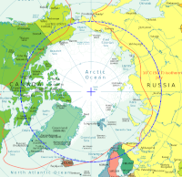
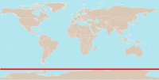

 Parleremo di popolazioni che vivono al disopra del dircolo polare artico.
Il circolo polare artico è uno dei cinque principali paralleli indicati sulle carte geografiche, e uno dei due circoli polari. È posto lungo il parallelo a 66°33'39" di latitudine nord, è teoricamente il punto più meridionale di latitudine in cui sia possibile vedere il sole di mezzanotte a nord dell'equatore.
Il circolo polare artico segna il confine meridionale del giorno continuativo al solstizio di giugno e il perenne crepuscolo artico al solstizio di dicembre. Al di là del circolo polare artico, il sole rimane d'estate sopra l'orizzonte per almeno 24 ore consecutive (sole di mezzanotte). Viceversa durante l'inverno il sole rimane sotto l'orizzonte per almeno 24 ore consecutive (notte polare).
In realtà, a causa della curvatura della Terra del suo schiacciamento ai poli geografici, e poiché il Sole appare come un disco e non come un punto, il sole di mezzanotte si può vedere la notte del solstizio di giugno fino ai 50' (90 km) a sud del circolo polare artico e, al solstizio di dicembre, parte del Sole è visibile fino ai 50' di latitudine a nord del circolo.
La città più grande a nord del Circolo Polare Artico è Murmansk (ca. 300 000 abitanti) nella Russia europea. Sempre in Russia si trovano Noril'sk (ca. 100 000 abitanti, Siberia) e Vorkuta (ca. 60 000 abitanti, Russia Europea). Fuori della Russia sono da menzionare Tromsø (ca. 70 000 abitanti) e Bodø (ca. 50 000) in Norvegia nonché Kiruna (ca. 20 000) in Svezia, mentre Rovaniemi (ca. 60 000 ab.) in Finlandia si trova appena 6-7 km a sud del Circolo Polare Artico. In America le città a nord del Circolo Polare Artico sono tutte molto piccole: Utqiaġvik, precedentemente Barrow, in Alaska, ha circa 4 000 abitanti, Inuvik in Canada ca. 3 000, Qeqqata in Groenlandia ca. 10 000 (intero comune).
I ciukci (singolare: ciukcio; in russo Чукчи, Čukči, in ciukcio ԓыгъоравэтԓьэт, оравэтԓьэт) sono una popolazione della Russia stanziata nella Siberia nord orientale, in particolare nel circondario autonomo della Čukotka.
Non avendo mai avuto uno status politico indipendente, i nomi dati al popolo sami nelle varie lingue sono stati influenzati dagli stati di cui il Sámi fa parte, principalmente dal finlandese, norvegese e svedese. Vengono spesso chiamati erroneamente con l'esoetnonimo lappóni o làpponi.
Inuit (ᐃᓄᐃᑦ in lingua inuktitut, parola che significa uomini; singolare inuk o inuq) è un piccolo popolo dell'Artico che discende dai Thule. Gli Inuit sono uno dei due gruppi principali insieme agli Yupik: il termine dispregiativo «eschimesi» (che significa «fabbricante di racchette da neve», mentre la traduzione «mangiatori di carne cruda», spesso riportata, è una paraetimologia) fu usato dai nativi americani Algonchini del Canada orientale per indicare questo popolo loro vicino, che si vestiva di pelli ed era costituito da esperti cacciatori. Gli Inuit e gli Yupik non amano l'utilizzo di questa parola considerato che hanno, appunto, un proprio nome specifico.
 circolo polare antartico è uno dei cinque principali paralleli indicati sulle carte geografiche. È uno dei due circoli polari, ed è posto lungo il parallelo 66°33'39" di latitudine sud, la latitudine più settentrionale a sud dell'equatore in cui è possibile vedere il sole di mezzanotte presso il solstizio del mese di dicembre. È stato attraversato per la prima volta il 17 gennaio 1773 dall'esploratore britannico James Cook durante il suo secondo viaggio.
Il circolo polare antartico segna il confine settentrionale del giorno polare durante il solstizio di dicembre, e la notte polare al solstizio di giugno. Al di là del circolo polare antartico il Sole rimane sopra l'orizzonte per almeno ventiquattro ore consecutive, almeno una volta all'anno (sole di mezzanotte). Viceversa, il sole è sotto l'orizzonte per almeno ventiquattro ore consecutive una volta l'anno (notte polare).
In realtà, a causa della rifrazione e perché il sole appare come un disco e non come un punto, una parte del sole di mezzanotte si può vedere la notte del solstizio di dicembre fino ai 50' (90 km) a nord del circolo polare antartico (e al solstizio di giugno, parte del Sole è visibile fino ai 50' a sud del circolo polare artico).